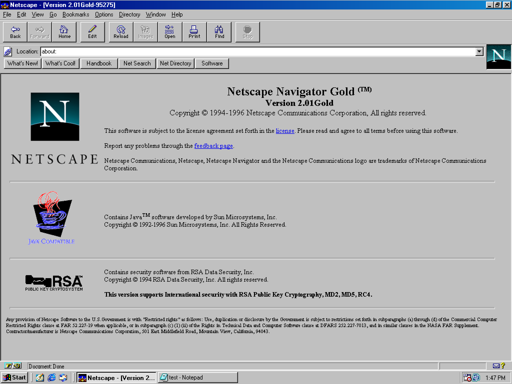
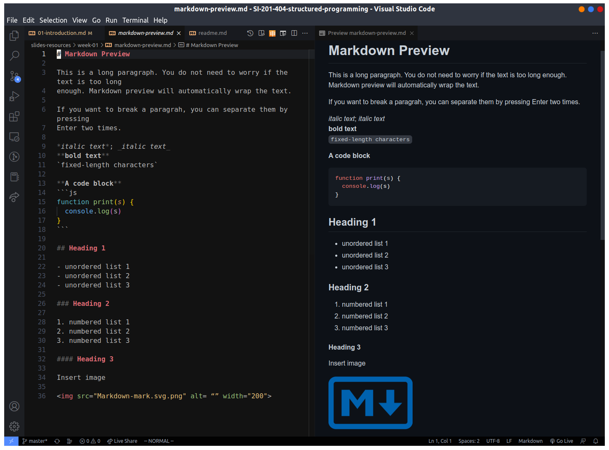

2 Your first time with JavaScript
2.1 A brief story about JavaScript
Bagian ini hanya menambahkan sedikit yang akan (sudah?) dijelaskan dalam kuliah.
JavaScript bermula dari pengembangan web browser Netscape Navigator.
Dalam rilis Navigator tahun 1995, Brendan Eich mengembangkan bahasa pemrograman
JavaScript. Web browser sebelumnya masih sangat statis (tidak dapat
menampilkan hal yang bergerak / animasi). Berikut sedikit gambaran web statis
sebelum JavaScript

Pada release perdana JavaScript di web browser Netscape Navigator 2.0, saat itu JavaScript hanya mampu menampilkan dialog alert box, belum seperti tampilan pada zaman sekarang
”
(video selengkapnya dapat dilihat disini)
Dibandingkan dengan kemampuan JavaScript di tahun 2022 yang mampu untuk melakukan onlide coding dan menampilkan hasilnya di web browser (sumber: CodePen: CSS Trigonometric function DNA strand ü§ì)
Di bagian berikutnya kita akan membahas hal yang lebih sederhana yaitu cara untuk menjalankan kode JavaScript di web browser.
2.2 How to run JavaScript in the web browser
Berikutnya kita akan mencoba menjalankan kode JavaScript berikut
Untuk dapat menjalankan perintah tersebut kita akan melalui berbagai tahapan
berikut:
1. Kita siapkan terlebih dahulu direktori untuk menampung semua berkas
JavaScript dan satu tambahan berkas HTML. Misal kita buat nama direktory
hello. Di dalam direktori tersebut, kita isi berkas berekstensi
JavaScript, .js, dengan nama hello.js yang berisikan kode
JavaScript di atas. Untuk membuat kedua berkas tersebut dapat menggunakan
text editor seperti Notepad, Notepad++, GEdit, atau VSCode (yang
akan kita jelaskan di bagian berikutnya).
Berikutnya kita buat berkas HTML berekstensi
.htmldan berisi kode HTML berikut:html <script src="hello.js"></script>Kita namakan berkas tersebuthello.html.Setelah kedua berkas dibuat, buka web browser favorit kalian. Pada contoh ini, kita akan menggunakan Google Chrome web browser yang terpasang pada sistem operasi Linux. Buka halaman baru, lalu tekan
Ctrl + Ountuk membuka berkashello.html. Maka halaman baru tersebut hanya menampilkan halaman berwarna putih kosong
Selanjutnya, tekan tombol
F12untuk masuk ke jendela Developer Tools dari Google Chrome web browser. Maka akan muncul keluaran dari program yaitu menuliskan"Hello World!"pada bagianconsole
Kita dapat mengubah-ubah isi dari
hello.js, lalu kita perlu me-refresh halamanhello.htmluntuk melihat perubahan di jendela console Google Chrome. Pada tahap ini kita melihat bahwa sebenarnya web browser sudah memuat suatu program untuk menerjemahkan kode JavaScript tanpa perlu menginstal program tambahan
2.3 VSCode installation
Ada banyak tutorial di internet dan YouTube mengenai instalasi VSCode di Windows, Mac, dan Linux. Namun disini hanya disampaikan secara singkat instalasi VSCode.
Pertama-tama, unduh berkas installer di tautan berikut: https://code.visualstudio.com/download.
Pilih sesuai dengan jenis sistem operasi yang kita miliki.
Setelah itu jalankan installer Windows dan ikuti perintah yang ditampilkan pada dialog instalasi.
Jika telah selesai dilakukan instalasi, maka akan muncul tampilan jendela Welcome page
Berikutnya dapat dipilih working directory tempat menaruh berkas-berkas kode JavaScript yang akan dipelajari sepanjang sesi praktikum. Agar lebih tertata-rapi buat di dalamnya direktori tambahan yang memisahkan berkas-berkas untuk tiap pertemuan, misal:week-01,week-02, dst.
2.4 Node.js installation
Untuk Node.js yang digunakan adalah versi LTS (Long-Term Support) 20.11.0
yang ter-update sampai bulan Januari 2024. Versi Node.js ini harus
di-instal dengan versi NPM (Node Package Manager) yang bersesuaian
yaitu versi 10.2.4.
Agar bisa menggunakan berbagai versi Node.js, maka diperlukan NVM
(Node Version Manager). Versi yang akan kita gunakan adalah versi 1.1.12
yang ter-update hingga November 2023.
Tahapan instalasi Node.js untuk Window tidak sederhana, namun panduannya bisa
diikuti dari
1. NVM for Windows.
2. Install NodeJS on Windows
Catatan: Setelah instalasi untuk dilakukan restart supaya dapat menjalankan
perintah node di PowerShell.
Perlu diingat NVM for Windows sangat berbeda dengan NVM yang ada untuk Mac dan Linux. Saya menyarankan untuk mengikuti panduan nomor 2, meskipun sebenarnya kedua panduan melakukan instalasi file yang sama.
Untuk tahapan instalasi Linux atau Mac sangat mudah, tinggal mengetikan baris- baris perintah berikut di Terminal
2.5 Running Javascript program in Node.js
Setelah proses instalasi VSCode dan Node.js telah berhasil dilakukan, maka kita dapat melakukan proses pembelajaran JavaScript lebih mudah.
Dalam direktori yang telah dibuat di dalam VSCode, setelah membuat berkas .js
kita dapat menjalankan kode JavaScript pada bagian terminal di VSCode (jika
bagian terminal di VSCode belum muncul, klik menu “Terminal” dan pilih
“New Terminal”).
Arahkan direktory di tempat berkas JavaScript yang ingin dijalankan berada, lalu ketik perintah berikut di terminal VSCode.
Berikut gambaran menggunakan Node.js dan VScode beserta penulisan kode
JavaScript
2.6 Short tutorial of using Markdown
Bisa mengikuti panduan berikut: Markdown Guide. Di dalam panduan tersebut, kita bisa mencoba satu per satu sintaks yang dimiliki oleh Markdown. Namun kita bisa mencoba kode Markdown yang diberikan pada gambar di bawah ini

Untuk bisa menampilkan kode Markdown dalam bentuk seperti yang disebelah kanan, perlu di-install VSCode extension: Markdown Preview Github Styling.
Exercise
Write your summary or findings after reading this chapter.
Berikan kelebihan dan kekurangan menggunakan browser dan Node.js.
Jalankan program berikut melalui Node.js.
let randomQuote; const quotes = [ "The best way to predict the future is to create it.", "Be the change you wish to see in the world.", "Innovation distinguishes between a leader and a follower.", "Believe you can and you're halfway there.", "Your time is limited, don't waste it living someone else's life."]; randomQuote = quotes[Math.floor(Math.random() * quotes.length)]; console.log(randomQuote);Selanjutnya apakah yang terjadi jika secara terus menerus hanya menjalankan dua baris terakhir?